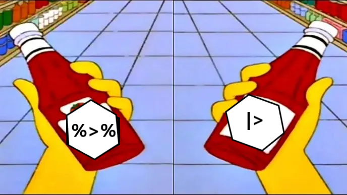

library(tidyverse)
library(here)
library(janitor)Lección 2. Manipulación de datos con dplyr
1 El formato Tidy

Tidy Data es un concepto fundamental dentro del ecosistema Tidyverse en R que se centra en la organización y manipulación eficiente de datos para análisis y visualización.
En el contexto de Tidy Data, se busca estructurar los conjuntos de datos de manera que cada observación sea una fila, cada variable sea una columna y cada valor tenga su propia celda. Esto permite que los datos estén organizados en un formato uniforme y consistente, lo que facilita su manipulación y análisis. En resumen, los principios de Tidy Data son:
En resumen, un tidy data sigue las siguientes caracterÃsticas:
- Cada variable debe tener su propia columna
- Cada observación debe tener su propia fila
- Cada valor debe tener su propia celda

2 Manipulación de datos con Dplyr
El paquete Dplyr proporciona un conjunto coherente de funciones que permiten realizar operaciones comunes de manipulación de datos de manera intuitiva y eficaz. Estas funciones están optimizadas para trabajar con datos grandes y complejos, y permiten realizar tareas como filtrar filter() filas, seleccionar select() columnas, transformar valores mutate(), crear resúmenes summerise() y agrupar datos group_by() entre otras funciones. Las cinco funciones mas comunes que usaremos son:
select(): selecciona columnas de una tabla.filter(): selecciona (o filtra) filas de una tabla a partir de una o más condiciones lógicas.group_by(): agrupa una tabla en base al valor de una o más columnas.mutate(): agrega nuevas columnas a una tabla.summarise(): calcula estadÃsticas para cada grupo de una tabla.
Sobre la base de datos

Para esta sección utilizaremos una versión modificada de la base POKEMON de Kaggle y contiene la siguiente información:
- pokedex number: Número de identificador de cada pokémon
- Name: Nombre de cada Pokémon
- Type: Tipo de Pokémon, esto determina su resistencia o debilidad a los ataques
- HP: Hit Points, define que tanto daño puede tolerar un Pokémon antes de desvanecerse
- Attack: Ataque
- Defense: Defensa
- SP Atk: Ataque especial
- SP Def: Defensa especial
- Speed: Velocidad. Determina cual Pokémon ataca primero en cada ronda
- Weight: peso en kg Generatio: A cual generación pertenece
- is legendary: Si es legendario o no
pokemon <- read_csv("data/pokemon.csv")Rows: 801 Columns: 13
── Column specification ────────────────────────────────────────────────────────
Delimiter: ","
chr (2): NAME, type1
dbl (11): pokedex #, attack, defense, HP, percentage_male, sp_attack, sp_def...
ℹ Use `spec()` to retrieve the full column specification for this data.
ℹ Specify the column types or set `show_col_types = FALSE` to quiet this message.pokemon# A tibble: 801 × 13
`pokedex #` NAME attack defense HP percentage_male sp_attack sp_defense
<dbl> <chr> <dbl> <dbl> <dbl> <dbl> <dbl> <dbl>
1 1 Bulbas… 49 49 45 88.1 65 65
2 2 Ivysaur 62 63 60 88.1 80 80
3 3 Venusa… 100 123 80 88.1 122 120
4 4 Charma… 52 43 39 88.1 60 50
5 5 Charme… 64 58 58 88.1 80 65
6 6 Chariz… 104 78 78 88.1 159 115
7 7 Squirt… 48 65 44 88.1 50 64
8 8 Wartor… 63 80 59 88.1 65 80
9 9 Blasto… 103 120 79 88.1 135 115
10 10 Caterp… 30 35 45 50 20 20
# ℹ 791 more rows
# ℹ 5 more variables: speed <dbl>, type1 <chr>, `weight kg` <dbl>,
# generation <dbl>, `is legendary` <dbl>Vamos a correjir los nombres de las columnas con janitor
pokemon <- clean_names(pokemon)
pokemon# A tibble: 801 × 13
pokedex_number name attack defense hp percentage_male sp_attack
<dbl> <chr> <dbl> <dbl> <dbl> <dbl> <dbl>
1 1 Bulbasaur 49 49 45 88.1 65
2 2 Ivysaur 62 63 60 88.1 80
3 3 Venusaur 100 123 80 88.1 122
4 4 Charmander 52 43 39 88.1 60
5 5 Charmeleon 64 58 58 88.1 80
6 6 Charizard 104 78 78 88.1 159
7 7 Squirtle 48 65 44 88.1 50
8 8 Wartortle 63 80 59 88.1 65
9 9 Blastoise 103 120 79 88.1 135
10 10 Caterpie 30 35 45 50 20
# ℹ 791 more rows
# ℹ 6 more variables: sp_defense <dbl>, speed <dbl>, type1 <chr>,
# weight_kg <dbl>, generation <dbl>, is_legendary <dbl>2.1 Seleccionar columnas con select()
Permite seleccionar una o varias columnas de un tibble o data.frame.
Por ejemplo, si queremos seleccionar solamente las columnas Name, y Attack
select(pokemon, name, attack)# A tibble: 801 × 2
name attack
<chr> <dbl>
1 Bulbasaur 49
2 Ivysaur 62
3 Venusaur 100
4 Charmander 52
5 Charmeleon 64
6 Charizard 104
7 Squirtle 48
8 Wartortle 63
9 Blastoise 103
10 Caterpie 30
# ℹ 791 more rowsRecuerda que si queremos generar un nuevo objeto con ese subset de datos tenemos que asignarlo a otro objeto.
pokemon_sub <- select(pokemon, name, attack)
pokemon_sub# A tibble: 801 × 2
name attack
<chr> <dbl>
1 Bulbasaur 49
2 Ivysaur 62
3 Venusaur 100
4 Charmander 52
5 Charmeleon 64
6 Charizard 104
7 Squirtle 48
8 Wartortle 63
9 Blastoise 103
10 Caterpie 30
# ℹ 791 more rowsCon select() tambien podemos seleccionar todo menos una columna especifica con el operador -
pokemon_sub <- select(pokemon, -attack)
pokemon_sub# A tibble: 801 × 12
pokedex_number name defense hp percentage_male sp_attack sp_defense speed
<dbl> <chr> <dbl> <dbl> <dbl> <dbl> <dbl> <dbl>
1 1 Bulb… 49 45 88.1 65 65 45
2 2 Ivys… 63 60 88.1 80 80 60
3 3 Venu… 123 80 88.1 122 120 80
4 4 Char… 43 39 88.1 60 50 65
5 5 Char… 58 58 88.1 80 65 80
6 6 Char… 78 78 88.1 159 115 100
7 7 Squi… 65 44 88.1 50 64 43
8 8 Wart… 80 59 88.1 65 80 58
9 9 Blas… 120 79 88.1 135 115 78
10 10 Cate… 35 45 50 20 20 45
# ℹ 791 more rows
# ℹ 4 more variables: type1 <chr>, weight_kg <dbl>, generation <dbl>,
# is_legendary <dbl>o podemos seleccionar un intervalo de columnas
pokemon_sub <- select(pokemon, name, attack:hp)
pokemon_sub# A tibble: 801 × 4
name attack defense hp
<chr> <dbl> <dbl> <dbl>
1 Bulbasaur 49 49 45
2 Ivysaur 62 63 60
3 Venusaur 100 123 80
4 Charmander 52 43 39
5 Charmeleon 64 58 58
6 Charizard 104 78 78
7 Squirtle 48 65 44
8 Wartortle 63 80 59
9 Blastoise 103 120 79
10 Caterpie 30 35 45
# ℹ 791 more rowso lo inverso para descargar un intervalo de columnas
pokemon_sub <- select(pokemon, -(attack:hp))
pokemon_sub# A tibble: 801 × 10
pokedex_number name percentage_male sp_attack sp_defense speed type1
<dbl> <chr> <dbl> <dbl> <dbl> <dbl> <chr>
1 1 Bulbasaur 88.1 65 65 45 grass
2 2 Ivysaur 88.1 80 80 60 grass
3 3 Venusaur 88.1 122 120 80 grass
4 4 Charmander 88.1 60 50 65 fire
5 5 Charmeleon 88.1 80 65 80 fire
6 6 Charizard 88.1 159 115 100 fire
7 7 Squirtle 88.1 50 64 43 water
8 8 Wartortle 88.1 65 80 58 water
9 9 Blastoise 88.1 135 115 78 water
10 10 Caterpie 50 20 20 45 bug
# ℹ 791 more rows
# ℹ 3 more variables: weight_kg <dbl>, generation <dbl>, is_legendary <dbl>La función everything() se puede seleccionar todo, y con esto es factible combiar el orden de las columnas. Por ejemplo, si queremos que la primera columna sea type ejecutamos:
select(pokemon, type1, everything())# A tibble: 801 × 13
type1 pokedex_number name attack defense hp percentage_male sp_attack
<chr> <dbl> <chr> <dbl> <dbl> <dbl> <dbl> <dbl>
1 grass 1 Bulbasaur 49 49 45 88.1 65
2 grass 2 Ivysaur 62 63 60 88.1 80
3 grass 3 Venusaur 100 123 80 88.1 122
4 fire 4 Charmand… 52 43 39 88.1 60
5 fire 5 Charmele… 64 58 58 88.1 80
6 fire 6 Charizard 104 78 78 88.1 159
7 water 7 Squirtle 48 65 44 88.1 50
8 water 8 Wartortle 63 80 59 88.1 65
9 water 9 Blastoise 103 120 79 88.1 135
10 bug 10 Caterpie 30 35 45 50 20
# ℹ 791 more rows
# ℹ 5 more variables: sp_defense <dbl>, speed <dbl>, weight_kg <dbl>,
# generation <dbl>, is_legendary <dbl>2.1.1 Seleccionar variables con un patrón
Estas funcionen ayudad a seleccionar variables según un patrón determinado
starts_with(): Inicia con un prefijo exactoends_with(): Finaliza con un sufijo exactocontains(): Contiene una cadena literal
Por ejemplo, podemos seleccionar las columnas de Sp attack y Sp deffense utilizando el prefijo sp
select(pokemon, name, starts_with("sp_"))# A tibble: 801 × 3
name sp_attack sp_defense
<chr> <dbl> <dbl>
1 Bulbasaur 65 65
2 Ivysaur 80 80
3 Venusaur 122 120
4 Charmander 60 50
5 Charmeleon 80 65
6 Charizard 159 115
7 Squirtle 50 64
8 Wartortle 65 80
9 Blastoise 135 115
10 Caterpie 20 20
# ℹ 791 more rowsO podemos seleccionar las variables relacionadas con ataque (attack)
select(pokemon, name, contains("attack"))# A tibble: 801 × 3
name attack sp_attack
<chr> <dbl> <dbl>
1 Bulbasaur 49 65
2 Ivysaur 62 80
3 Venusaur 100 122
4 Charmander 52 60
5 Charmeleon 64 80
6 Charizard 104 159
7 Squirtle 48 50
8 Wartortle 63 65
9 Blastoise 103 135
10 Caterpie 30 20
# ℹ 791 more rows2.2 Filtrar variables con filter()

La función filter() nos permite filtrar los elementos de una variable (columna) que cumplan con una condición especifica.
Por ejemplo, para filtrar pokemon que tengan un nivel de ataque (Attack) superior a 100 usariamos
filter(pokemon, attack > 100)# A tibble: 169 × 13
pokedex_number name attack defense hp percentage_male sp_attack
<dbl> <chr> <dbl> <dbl> <dbl> <dbl> <dbl>
1 6 Charizard 104 78 78 88.1 159
2 9 Blastoise 103 120 79 88.1 135
3 15 Beedrill 150 40 65 50 15
4 34 Nidoking 102 77 81 100 85
5 57 Primeape 105 60 65 50 60
6 59 Arcanine 110 80 90 75.4 100
7 68 Machamp 130 80 90 75.4 65
8 71 Victreebel 105 65 80 50 100
9 76 Golem 120 130 80 50 55
10 85 Dodrio 110 70 60 50 60
# ℹ 159 more rows
# ℹ 6 more variables: sp_defense <dbl>, speed <dbl>, type1 <chr>,
# weight_kg <dbl>, generation <dbl>, is_legendary <dbl>Para establecer varios condiciones, simplemente las podemos separar por una ,. Por ejemplo, si queremos filtrar a los pokemon que tengan un nivel de ataque mayor a 100 y que sea de tipo fuego (fire)
filter(pokemon, attack > 100, type1 == "fire")# A tibble: 11 × 13
pokedex_number name attack defense hp percentage_male sp_attack
<dbl> <chr> <dbl> <dbl> <dbl> <dbl> <dbl>
1 6 Charizard 104 78 78 88.1 159
2 59 Arcanine 110 80 90 75.4 100
3 136 Flareon 130 60 65 88.1 95
4 244 Entei 115 85 115 NA 90
5 250 Ho-Oh 130 90 106 NA 110
6 257 Blaziken 160 80 80 88.1 130
7 323 Camerupt 120 100 70 50 145
8 392 Infernape 104 71 76 88.1 104
9 500 Emboar 123 65 110 88.1 100
10 721 Volcanion 110 120 80 NA 130
11 727 Incineroar 115 90 95 88.1 80
# ℹ 6 more variables: sp_defense <dbl>, speed <dbl>, type1 <chr>,
# weight_kg <dbl>, generation <dbl>, is_legendary <dbl>
Tip
Si tienes muchas condiciones, puedes escribir cada condición en una lÃnea diferente para evitar lÃneas de código muy largas
filter(pokemon, attack > 100,
type1 == "fire",
generation == 1,
speed > 50)Si queremos filtrar distintas condiciones de una misma variable (columna) podemos usar el operador %in%.
Por ejemplo, para filtar los pokemon que sean de tipo fuego y agua
filter(pokemon, type1 %in% c("fire", "water"))# A tibble: 166 × 13
pokedex_number name attack defense hp percentage_male sp_attack
<dbl> <chr> <dbl> <dbl> <dbl> <dbl> <dbl>
1 4 Charmander 52 43 39 88.1 60
2 5 Charmeleon 64 58 58 88.1 80
3 6 Charizard 104 78 78 88.1 159
4 7 Squirtle 48 65 44 88.1 50
5 8 Wartortle 63 80 59 88.1 65
6 9 Blastoise 103 120 79 88.1 135
7 37 Vulpix 41 40 38 24.6 50
8 38 Ninetales 67 75 73 24.6 81
9 54 Psyduck 52 48 50 50 65
10 55 Golduck 82 78 80 50 95
# ℹ 156 more rows
# ℹ 6 more variables: sp_defense <dbl>, speed <dbl>, type1 <chr>,
# weight_kg <dbl>, generation <dbl>, is_legendary <dbl>
Nota
Si tienes muchas condiciones o si tienes las mismas condiciones que quieres filtrar en distintos sets de datos, puedes hacer un vector y despues incorporarlo en la funcion filter. Por ejemplo
tipos <- c("fire", "normal", "water")
filter(pokemon, type1 %in% tipos)# A tibble: 271 × 13
pokedex_number name attack defense hp percentage_male sp_attack
<dbl> <chr> <dbl> <dbl> <dbl> <dbl> <dbl>
1 4 Charmander 52 43 39 88.1 60
2 5 Charmeleon 64 58 58 88.1 80
3 6 Charizard 104 78 78 88.1 159
4 7 Squirtle 48 65 44 88.1 50
5 8 Wartortle 63 80 59 88.1 65
6 9 Blastoise 103 120 79 88.1 135
7 16 Pidgey 45 40 40 50 35
8 17 Pidgeotto 60 55 63 50 50
9 18 Pidgeot 80 80 83 50 135
10 19 Rattata 56 35 30 50 25
# ℹ 261 more rows
# ℹ 6 more variables: sp_defense <dbl>, speed <dbl>, type1 <chr>,
# weight_kg <dbl>, generation <dbl>, is_legendary <dbl>Es posbile filtrar un intervalo de valores utilizando la función between(). Esta función requiere como argumentos el nombre de la variable que queremos filtrar, el lÃmite inferior y el lÃmite superior.
Por ejemplo, si queremos filtrar los pokemon que tengan un nivel de ataque (attack) mayor a 100 pero menor a 150
filter(pokemon, between(attack, 100, 150))# A tibble: 191 × 13
pokedex_number name attack defense hp percentage_male sp_attack
<dbl> <chr> <dbl> <dbl> <dbl> <dbl> <dbl>
1 3 Venusaur 100 123 80 88.1 122
2 6 Charizard 104 78 78 88.1 159
3 9 Blastoise 103 120 79 88.1 135
4 15 Beedrill 150 40 65 50 15
5 28 Sandslash 100 120 75 50 25
6 34 Nidoking 102 77 81 100 85
7 51 Dugtrio 100 60 35 50 50
8 57 Primeape 105 60 65 50 60
9 59 Arcanine 110 80 90 75.4 100
10 67 Machoke 100 70 80 75.4 50
# ℹ 181 more rows
# ℹ 6 more variables: sp_defense <dbl>, speed <dbl>, type1 <chr>,
# weight_kg <dbl>, generation <dbl>, is_legendary <dbl>Podemos usar la operación opuesta utilizando el operado !
filter(pokemon, !between(attack, 100, 150))# A tibble: 610 × 13
pokedex_number name attack defense hp percentage_male sp_attack
<dbl> <chr> <dbl> <dbl> <dbl> <dbl> <dbl>
1 1 Bulbasaur 49 49 45 88.1 65
2 2 Ivysaur 62 63 60 88.1 80
3 4 Charmander 52 43 39 88.1 60
4 5 Charmeleon 64 58 58 88.1 80
5 7 Squirtle 48 65 44 88.1 50
6 8 Wartortle 63 80 59 88.1 65
7 10 Caterpie 30 35 45 50 20
8 11 Metapod 20 55 50 50 25
9 12 Butterfree 45 50 60 50 90
10 13 Weedle 35 50 40 50 20
# ℹ 600 more rows
# ℹ 6 more variables: sp_defense <dbl>, speed <dbl>, type1 <chr>,
# weight_kg <dbl>, generation <dbl>, is_legendary <dbl>
Ejercicio: ¿¡QUIEN ES ESE POKEMON!? 📣

Nuestro pokémon tiene un valor de HP entre 100 y 200; valor de velocidad menor a 50; es del tipo1 Normal; tiene un valor de defensa menor a 40 y pertenece a la primera generación
ver codigo
filter(pokemon, between(hp, 100, 200),
speed < 50,
type1 == "normal",
defense < 40,
generation == 1)2.2.1 Filtrar variables con un patrón
Tambien es posible filtrar una variable a partir de un caracter en especifico usando la función str_detect().
filter(pokemon, str_detect(name, "eon"))# A tibble: 13 × 13
pokedex_number name attack defense hp percentage_male sp_attack
<dbl> <chr> <dbl> <dbl> <dbl> <dbl> <dbl>
1 5 Charmeleon 64 58 58 88.1 80
2 134 Vaporeon 65 60 130 88.1 110
3 135 Jolteon 65 60 65 88.1 110
4 136 Flareon 130 60 65 88.1 95
5 196 Espeon 65 60 65 88.1 130
6 197 Umbreon 65 110 95 88.1 60
7 352 Kecleon 90 70 60 50 60
8 395 Empoleon 86 88 84 88.1 111
9 456 Finneon 49 56 49 50 49
10 457 Lumineon 69 76 69 50 69
11 470 Leafeon 110 130 65 88.1 60
12 471 Glaceon 60 110 65 88.1 130
13 700 Sylveon 65 65 95 88.1 110
# ℹ 6 more variables: sp_defense <dbl>, speed <dbl>, type1 <chr>,
# weight_kg <dbl>, generation <dbl>, is_legendary <dbl>2.3 Transformar o crear columnas con mutate()

La función mutate() es una función versatil en el sentido que nos permite crear nuevas variables que contengan alguna operación a partir de las que ya tenemos, añadir una nueva variable o transformar una variable ya existente
Por ejemplo, podemos generar una nueva columna llamada “at_df_ratio†con la propoción de los valores de Ataque sobre Defensa
pokemon_mutate <- mutate(pokemon, at_df_ratio = attack/defense )
head(pokemon_mutate$at_df_ratio)[1] 1.0000000 0.9841270 0.8130081 1.2093023 1.1034483 1.3333333De igual manera, se pueden generar diversas nuevas columnas en una misma función separadas por comas.
pokemon_mutate <- mutate(pokemon,
at_df_ratio = attack/defense,
at_df_per = at_df_ratio * 100,
nueva_col = "nueva columna")
pokemon_mutate# A tibble: 801 × 16
pokedex_number name attack defense hp percentage_male sp_attack
<dbl> <chr> <dbl> <dbl> <dbl> <dbl> <dbl>
1 1 Bulbasaur 49 49 45 88.1 65
2 2 Ivysaur 62 63 60 88.1 80
3 3 Venusaur 100 123 80 88.1 122
4 4 Charmander 52 43 39 88.1 60
5 5 Charmeleon 64 58 58 88.1 80
6 6 Charizard 104 78 78 88.1 159
7 7 Squirtle 48 65 44 88.1 50
8 8 Wartortle 63 80 59 88.1 65
9 9 Blastoise 103 120 79 88.1 135
10 10 Caterpie 30 35 45 50 20
# ℹ 791 more rows
# ℹ 9 more variables: sp_defense <dbl>, speed <dbl>, type1 <chr>,
# weight_kg <dbl>, generation <dbl>, is_legendary <dbl>, at_df_ratio <dbl>,
# at_df_per <dbl>, nueva_col <chr>Con mutate(), también es posible cambiar el tipo de dato de cada columna. Por ejemplo, cambiar la columna “Type1†de carácter a factor:
pokemon_mutate <- mutate(pokemon, type1 = factor(type1))
pokemon_mutate# A tibble: 801 × 13
pokedex_number name attack defense hp percentage_male sp_attack
<dbl> <chr> <dbl> <dbl> <dbl> <dbl> <dbl>
1 1 Bulbasaur 49 49 45 88.1 65
2 2 Ivysaur 62 63 60 88.1 80
3 3 Venusaur 100 123 80 88.1 122
4 4 Charmander 52 43 39 88.1 60
5 5 Charmeleon 64 58 58 88.1 80
6 6 Charizard 104 78 78 88.1 159
7 7 Squirtle 48 65 44 88.1 50
8 8 Wartortle 63 80 59 88.1 65
9 9 Blastoise 103 120 79 88.1 135
10 10 Caterpie 30 35 45 50 20
# ℹ 791 more rows
# ℹ 6 more variables: sp_defense <dbl>, speed <dbl>, type1 <fct>,
# weight_kg <dbl>, generation <dbl>, is_legendary <dbl>3 Pipes %>% y |>

El operador %>% nos permite aplicar una serie de funciones secuenciales a un objeto sin tener que ir creando variables para uso temporal o sin tener que anidar funciones.
Dplyr importa este operador de otro paquete (magrittr). De manera general, el operador permite unir el resultado de una función a la entrada de otra función.
Por ejemplo, si yo quiere filtrar los pokemon con valor de ataque mayor a 100, seleccionar las columnas Name y Attack y posteriormente mostrar solo las primeras seis filas (head) tendria que correr la siguiente linea:
head(select(filter(pokemon, attack < 100), name, attack))# A tibble: 6 × 2
name attack
<chr> <dbl>
1 Bulbasaur 49
2 Ivysaur 62
3 Charmander 52
4 Charmeleon 64
5 Squirtle 48
6 Wartortle 63Usando pipes, podemos reescribir esta secuencia de funciones asi:
pokemon |>
filter(attack < 100) %>%
select(name, attack) %>%
head()# A tibble: 6 × 2
name attack
<chr> <dbl>
1 Bulbasaur 49
2 Ivysaur 62
3 Charmander 52
4 Charmeleon 64
5 Squirtle 48
6 Wartortle 63Los resultados de esta cadena, pueden asignarse a una nueva variable
pokemon_pipe <- pokemon %>%
filter(attack < 100) %>%
select(name, attack) %>%
head()
Catsup, Ketchup; %>% , |>

Desde su versión 4.1.0, R incluye un pipe nativo |>. El comportamiento de ambos pipes es en gran medida el mismo, permitiendo expresar una secuencia de operaciones a un objeto, existen algunas diferencias que se discuten en este articulo.
Para fines de este curso, nos enfocaremos a usar el pipe de magritrr.
Tip
Para escribir rápidamente el operador %>% teclea Ctrl+shift+M
4 Resumen de los datos; summarise() y group_by().
Un elemento importante en el análisis exploratorio de datos es poder agrupar y resumir para obtener información relevante del set de datos. El promedio y la desviación estándar son ejemplos de esto. Además, agrupar los datos de acuerdo a alguna caracteristica permite obtener resultados mas informativos.
Para hacer un resumen (summary) de una determinada variable en los datos podemos utilizar la función summarise() que a su vez nos permite aplicar una función (mean, sd, min, max) a una variable.
Por ejemplo, para obtener el peso promedio en g de los pingüinos, podemos aplicar la función de la siguiente forma:
penguins <- read_csv("data/palmer_penguins.csv")Rows: 344 Columns: 8
── Column specification ────────────────────────────────────────────────────────
Delimiter: ","
chr (3): species, island, sex
dbl (5): bill_length_mm, bill_depth_mm, flipper_length_mm, body_mass_g, year
ℹ Use `spec()` to retrieve the full column specification for this data.
ℹ Specify the column types or set `show_col_types = FALSE` to quiet this message.penguins %>%
summarise(promedio = mean(body_mass_g, na.rm = TRUE))# A tibble: 1 × 1
promedio
<dbl>
1 4202.o aplicar el promedio y desviación estandar
penguins %>%
summarise(promedio = mean(body_mass_g, na.rm = TRUE),
desviacion = sd(body_mass_g, na.rm = TRUE))# A tibble: 1 × 2
promedio desviacion
<dbl> <dbl>
1 4202. 802.4.1 Operaciones agrupadas
Considerando la base de datos, seria mas informativo obtener el promedio por especie o por isla. La función group_by() permite agrupar los datos de acuerdo a alguna variable (factor).
Por ejemplo, para obtener el peso promedio por especie:
penguins %>%
group_by(species) %>%
summarise(promedio_peso = mean(body_mass_g, na.rm = TRUE))# A tibble: 3 × 2
species promedio_peso
<chr> <dbl>
1 Adelie 3701.
2 Chinstrap 3733.
3 Gentoo 5076.Podemos agrupar utilizando mas variables separadas por una coma:
penguins %>%
group_by(island, species, sex) %>%
summarise(promedio_peso = mean(body_mass_g, na.rm = TRUE),
desviacion = sd(body_mass_g, na.rm = TRUE),
N = n())`summarise()` has grouped output by 'island', 'species'. You can override using
the `.groups` argument.# A tibble: 13 × 6
# Groups: island, species [5]
island species sex promedio_peso desviacion N
<chr> <chr> <chr> <dbl> <dbl> <int>
1 Biscoe Adelie female 3369. 343. 22
2 Biscoe Adelie male 4050 356. 22
3 Biscoe Gentoo female 4680. 282. 58
4 Biscoe Gentoo male 5485. 313. 61
5 Biscoe Gentoo <NA> 4588. 338. 5
6 Dream Adelie female 3344. 212. 27
7 Dream Adelie male 4046. 331. 28
8 Dream Adelie <NA> 2975 NA 1
9 Dream Chinstrap female 3527. 285. 34
10 Dream Chinstrap male 3939. 362. 34
11 Torgersen Adelie female 3396. 259. 24
12 Torgersen Adelie male 4035. 372. 23
13 Torgersen Adelie <NA> 3681. 413. 5Existen otras funciones útiles por las que nos podrÃa interesar agrupar
count()mean()median()min()max()quantile(x, 0.25)IQR()
El uso de la función group_by() tambien nos permite transformar una variable e incluirla en una columna en conjunto con la función mutate()
penguins %>%
group_by(species, island,sex) %>%
mutate(promedio_peso_grupo = mean(body_mass_g, na.rm = TRUE)) %>%
select(promedio_peso_grupo, everything())# A tibble: 344 × 9
# Groups: species, island, sex [13]
promedio_peso_grupo species island bill_length_mm bill_depth_mm
<dbl> <chr> <chr> <dbl> <dbl>
1 4035. Adelie Torgersen 39.1 18.7
2 3396. Adelie Torgersen 39.5 17.4
3 3396. Adelie Torgersen 40.3 18
4 3681. Adelie Torgersen NA NA
5 3396. Adelie Torgersen 36.7 19.3
6 4035. Adelie Torgersen 39.3 20.6
7 3396. Adelie Torgersen 38.9 17.8
8 4035. Adelie Torgersen 39.2 19.6
9 3681. Adelie Torgersen 34.1 18.1
10 3681. Adelie Torgersen 42 20.2
# ℹ 334 more rows
# ℹ 4 more variables: flipper_length_mm <dbl>, body_mass_g <dbl>, sex <chr>,
# year <dbl>4.2 Resumir todas las variables con summarise_all()
La función summarise_all() requiere una función como argumento, la cual aplica a todas las columnas de la tabla. En este ejemplo se agrego el argumento na.rm = TRUE el cual ignora los NAs
penguins %>%
group_by(species, island, sex) %>%
summarise_all(mean, na.rm = TRUE) # A tibble: 13 × 8
# Groups: species, island [5]
species island sex bill_length_mm bill_depth_mm flipper_length_mm
<chr> <chr> <chr> <dbl> <dbl> <dbl>
1 Adelie Biscoe female 37.4 17.7 187.
2 Adelie Biscoe male 40.6 19.0 190.
3 Adelie Dream female 36.9 17.6 188.
4 Adelie Dream male 40.1 18.8 192.
5 Adelie Dream <NA> 37.5 18.9 179
6 Adelie Torgersen female 37.6 17.6 188.
7 Adelie Torgersen male 40.6 19.4 195.
8 Adelie Torgersen <NA> 37.9 18.2 187.
9 Chinstrap Dream female 46.6 17.6 192.
10 Chinstrap Dream male 51.1 19.3 200.
11 Gentoo Biscoe female 45.6 14.2 213.
12 Gentoo Biscoe male 49.5 15.7 222.
13 Gentoo Biscoe <NA> 45.6 14.6 216.
# ℹ 2 more variables: body_mass_g <dbl>, year <dbl>5 count()
La función count() nos permite saber cuantas observaciones hay en una variable especifica. Al agregar el argumento sort = TRUEdevuelve una tabla descendiente con el número de observaciones.
Regresemos a la base de datos de star wars y evaluemos cuantos personajes hay de cada planeta.
starwars <- read_csv("data/starwars.csv")Rows: 87 Columns: 14
── Column specification ────────────────────────────────────────────────────────
Delimiter: ","
chr (11): name, hair_color, skin_color, eye_color, sex, gender, homeworld, s...
dbl (3): height, mass, birth_year
ℹ Use `spec()` to retrieve the full column specification for this data.
ℹ Specify the column types or set `show_col_types = FALSE` to quiet this message.starwars %>%
count(homeworld, sort = TRUE)# A tibble: 49 × 2
homeworld n
<chr> <int>
1 Naboo 11
2 Tatooine 10
3 <NA> 10
4 Alderaan 3
5 Coruscant 3
6 Kamino 3
7 Corellia 2
8 Kashyyyk 2
9 Mirial 2
10 Ryloth 2
# ℹ 39 more rowsTambien es posible hacer contenos anidados incluyendo mas variables separadas por comas:
starwars %>%
count(species, homeworld, sort = TRUE)# A tibble: 58 × 3
species homeworld n
<chr> <chr> <int>
1 Human Tatooine 8
2 Human Naboo 5
3 Human <NA> 5
4 Droid <NA> 3
5 Gungan Naboo 3
6 Human Alderaan 3
7 Droid Tatooine 2
8 Human Corellia 2
9 Human Coruscant 2
10 Kaminoan Kamino 2
# ℹ 48 more rows
Tip
Por default, la función count() nombra n al número de items de cada groupo. Eso se puede modificar agregando el parámetro name.
starwars %>%
count(species, sort = TRUE, name = "otros")# A tibble: 38 × 2
species otros
<chr> <int>
1 Human 35
2 Droid 6
3 <NA> 4
4 Gungan 3
5 Kaminoan 2
6 Mirialan 2
7 Twi'lek 2
8 Wookiee 2
9 Zabrak 2
10 Aleena 1
# ℹ 28 more rowsstarwars %>%
mutate(sp = fct_lump_min(species, 2)) %>%
count(sp, sort = TRUE)# A tibble: 10 × 2
sp n
<fct> <int>
1 Human 35
2 Other 29
3 Droid 6
4 <NA> 4
5 Gungan 3
6 Kaminoan 2
7 Mirialan 2
8 Twi'lek 2
9 Wookiee 2
10 Zabrak 2